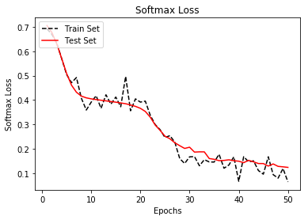
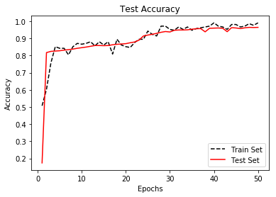

This script implements an RNN in TensorFlow to predict spam/ham from texts.
We start by loading the necessary libraries and initializing a computation graph in TensorFlow.
import os
import re
import io
import requests
import numpy as np
import matplotlib.pyplot as plt
import tensorflow as tf
from zipfile import ZipFile
from tensorflow.python.framework import ops
ops.reset_default_graph()
# Start a graph
sess = tf.Session()
Next we set the parameters for the RNN model.
# Set RNN parameters
epochs = 50
batch_size = 250
max_sequence_length = 25
rnn_size = 10
embedding_size = 50
min_word_frequency = 10
learning_rate = 0.0005
dropout_keep_prob = tf.placeholder(tf.float32)
We download and save the data next. First we check if we have saved it before and load it locally, if not, we load it from the internet (UCI machine learning data repository).
# Download or open data
data_dir = 'temp'
data_file = 'text_data.txt'
if not os.path.exists(data_dir):
os.makedirs(data_dir)
if not os.path.isfile(os.path.join(data_dir, data_file)):
zip_url = 'http://archive.ics.uci.edu/ml/machine-learning-databases/00228/smsspamcollection.zip'
r = requests.get(zip_url)
z = ZipFile(io.BytesIO(r.content))
file = z.read('SMSSpamCollection')
# Format Data
text_data = file.decode()
text_data = text_data.encode('ascii', errors='ignore')
text_data = text_data.decode().split('\n')
# Save data to text file
with open(os.path.join(data_dir, data_file), 'w') as file_conn:
for text in text_data:
file_conn.write("{}\n".format(text))
else:
# Open data from text file
text_data = []
with open(os.path.join(data_dir, data_file), 'r') as file_conn:
for row in file_conn:
text_data.append(row)
text_data = text_data[:-1]
text_data = [x.split('\t') for x in text_data if len(x) >= 1]
[text_data_target, text_data_train] = [list(x) for x in zip(*text_data)]
Next, we process the texts and turn them into numeric representations (words —> indices).
# Create a text cleaning function
def clean_text(text_string):
text_string = re.sub(r'([^\s\w]|_|[0-9])+', '', text_string)
text_string = " ".join(text_string.split())
text_string = text_string.lower()
return text_string
# Clean texts
text_data_train = [clean_text(x) for x in text_data_train]
# Change texts into numeric vectors
vocab_processor = tf.contrib.learn.preprocessing.VocabularyProcessor(max_sequence_length,
min_frequency=min_word_frequency)
text_processed = np.array(list(vocab_processor.fit_transform(text_data_train)))
WARNING:tensorflow:From <ipython-input-5-4e6c02d47d3d>:14: VocabularyProcessor.__init__ (from tensorflow.contrib.learn.python.learn.preprocessing.text) is deprecated and will be removed in a future version.
Instructions for updating:
Please use tensorflow/transform or tf.data.
WARNING:tensorflow:From /home/b418/anaconda3/envs/yuanxiao/lib/python3.6/site-packages/tensorflow/contrib/learn/python/learn/preprocessing/text.py:154: CategoricalVocabulary.__init__ (from tensorflow.contrib.learn.python.learn.preprocessing.categorical_vocabulary) is deprecated and will be removed in a future version.
Instructions for updating:
Please use tensorflow/transform or tf.data.
WARNING:tensorflow:From /home/b418/anaconda3/envs/yuanxiao/lib/python3.6/site-packages/tensorflow/contrib/learn/python/learn/preprocessing/text.py:170: tokenizer (from tensorflow.contrib.learn.python.learn.preprocessing.text) is deprecated and will be removed in a future version.
Instructions for updating:
Please use tensorflow/transform or tf.data.
Note: there will be a WARNING:… use tensorflow/transform or tf.data. Ignore this for now- there is an issue with getting tensorflow/transform to work. Hopefully this will be fixed soon and the code here will be updated.
Now we shuffle and split the texts into train/tests (80% training, 20% testing).
# Shuffle and split data
text_processed = np.array(text_processed)
text_data_target = np.array([1 if x == 'ham' else 0 for x in text_data_target])
shuffled_ix = np.random.permutation(np.arange(len(text_data_target)))
x_shuffled = text_processed[shuffled_ix]
y_shuffled = text_data_target[shuffled_ix]
# Split train/test set
ix_cutoff = int(len(y_shuffled)*0.80)
x_train, x_test = x_shuffled[:ix_cutoff], x_shuffled[ix_cutoff:]
y_train, y_test = y_shuffled[:ix_cutoff], y_shuffled[ix_cutoff:]
vocab_size = len(vocab_processor.vocabulary_)
print("Vocabulary Size: {:d}".format(vocab_size))
print("80-20 Train Test split: {:d} -- {:d}".format(len(y_train), len(y_test)))
Vocabulary Size: 933
80-20 Train Test split: 4459 -- 1115
Here we can define our RNN model. We create the placeholders for the data, word embedding matrices (and embedding lookups), and define the rest of the model.
The rest of the RNN model will create a dynamic RNN cell (regular RNN type), which will vary the number of RNNs needed for variable input length (different amount of words for input texts), and then output into a fully connected logistic layer to predict spam or ham as output.
# Create placeholders
x_data = tf.placeholder(tf.int32, [None, max_sequence_length])
y_output = tf.placeholder(tf.int32, [None])
# Create embedding
embedding_mat = tf.Variable(tf.random_uniform([vocab_size, embedding_size], -1.0, 1.0))
embedding_output = tf.nn.embedding_lookup(embedding_mat, x_data)
# Define the RNN cell
# tensorflow change >= 1.0, rnn is put into tensorflow.contrib directory. Prior version not test.
if tf.__version__[0] >= '1':
cell = tf.contrib.rnn.BasicRNNCell(num_units=rnn_size)
else:
cell = tf.nn.rnn_cell.BasicRNNCell(num_units=rnn_size)
output, state = tf.nn.dynamic_rnn(cell, embedding_output, dtype=tf.float32)
output = tf.nn.dropout(output, dropout_keep_prob)
# Get output of RNN sequence
#output = tf.transpose(output, [1, 0, 2])
#last = tf.gather(output, int(output.get_shape()[0]) - 1)
last = output[:,-1,:]
weight = tf.Variable(tf.truncated_normal([rnn_size, 2], stddev=0.1))
bias = tf.Variable(tf.constant(0.1, shape=[2]))
logits_out = tf.matmul(last, weight) + bias
Next we declare the loss function (softmax cross entropy), an accuracy function, and optimization function (RMSProp).
# Loss function
losses = tf.nn.sparse_softmax_cross_entropy_with_logits(logits=logits_out, labels=y_output)
loss = tf.reduce_mean(losses)
accuracy = tf.reduce_mean(tf.cast(tf.equal(tf.argmax(logits_out, 1), tf.cast(y_output, tf.int64)), tf.float32))
optimizer = tf.train.RMSPropOptimizer(learning_rate)
train_step = optimizer.minimize(loss)
You may ignore the warning, as the texts are small and our batch size is only 100. If you increase the batch size and/or have longer sequences of texts, this model may consume too much memory.
Next we initialize the variables in the computational graph.
init = tf.global_variables_initializer()
sess.run(init)
train_loss = []
test_loss = []
train_accuracy = []
test_accuracy = []
Now we can start our training!
# Start training
for epoch in range(epochs):
# Shuffle training data
shuffled_ix = np.random.permutation(np.arange(len(x_train)))
x_train = x_train[shuffled_ix]
y_train = y_train[shuffled_ix]
num_batches = int(len(x_train)/batch_size) + 1
# TO DO CALCULATE GENERATIONS ExACTLY
for i in range(num_batches):
# Select train data
min_ix = i * batch_size
max_ix = np.min([len(x_train), ((i+1) * batch_size)])
x_train_batch = x_train[min_ix:max_ix]
y_train_batch = y_train[min_ix:max_ix]
# Run train step
train_dict = {x_data: x_train_batch, y_output: y_train_batch, dropout_keep_prob:0.5}
sess.run(train_step, feed_dict=train_dict)
# Run loss and accuracy for training
temp_train_loss, temp_train_acc = sess.run([loss, accuracy], feed_dict=train_dict)
train_loss.append(temp_train_loss)
train_accuracy.append(temp_train_acc)
# Run Eval Step
test_dict = {x_data: x_test, y_output: y_test, dropout_keep_prob:1.0}
temp_test_loss, temp_test_acc = sess.run([loss, accuracy], feed_dict=test_dict)
test_loss.append(temp_test_loss)
test_accuracy.append(temp_test_acc)
print('Epoch: {}, Test Loss: {:.2}, Test Acc: {:.2}'.format(epoch+1, temp_test_loss, temp_test_acc))
Epoch: 1, Test Loss: 0.71, Test Acc: 0.17
Epoch: 2, Test Loss: 0.68, Test Acc: 0.82
Epoch: 3, Test Loss: 0.63, Test Acc: 0.82
Epoch: 4, Test Loss: 0.57, Test Acc: 0.83
Epoch: 5, Test Loss: 0.51, Test Acc: 0.83
Epoch: 6, Test Loss: 0.46, Test Acc: 0.83
Epoch: 7, Test Loss: 0.43, Test Acc: 0.83
Epoch: 8, Test Loss: 0.42, Test Acc: 0.84
Epoch: 9, Test Loss: 0.41, Test Acc: 0.84
Epoch: 10, Test Loss: 0.4, Test Acc: 0.85
Epoch: 11, Test Loss: 0.4, Test Acc: 0.85
Epoch: 12, Test Loss: 0.4, Test Acc: 0.85
Epoch: 13, Test Loss: 0.4, Test Acc: 0.86
Epoch: 14, Test Loss: 0.39, Test Acc: 0.86
Epoch: 15, Test Loss: 0.39, Test Acc: 0.86
Epoch: 16, Test Loss: 0.39, Test Acc: 0.86
Epoch: 17, Test Loss: 0.38, Test Acc: 0.86
Epoch: 18, Test Loss: 0.38, Test Acc: 0.87
Epoch: 19, Test Loss: 0.37, Test Acc: 0.87
Epoch: 20, Test Loss: 0.37, Test Acc: 0.87
Epoch: 21, Test Loss: 0.35, Test Acc: 0.87
Epoch: 22, Test Loss: 0.33, Test Acc: 0.88
Epoch: 23, Test Loss: 0.3, Test Acc: 0.89
Epoch: 24, Test Loss: 0.28, Test Acc: 0.91
Epoch: 25, Test Loss: 0.25, Test Acc: 0.92
Epoch: 26, Test Loss: 0.24, Test Acc: 0.92
Epoch: 27, Test Loss: 0.22, Test Acc: 0.93
Epoch: 28, Test Loss: 0.21, Test Acc: 0.94
Epoch: 29, Test Loss: 0.2, Test Acc: 0.94
Epoch: 30, Test Loss: 0.21, Test Acc: 0.94
Epoch: 31, Test Loss: 0.19, Test Acc: 0.95
Epoch: 32, Test Loss: 0.19, Test Acc: 0.95
Epoch: 33, Test Loss: 0.19, Test Acc: 0.95
Epoch: 34, Test Loss: 0.16, Test Acc: 0.95
Epoch: 35, Test Loss: 0.16, Test Acc: 0.95
Epoch: 36, Test Loss: 0.15, Test Acc: 0.96
Epoch: 37, Test Loss: 0.15, Test Acc: 0.96
Epoch: 38, Test Loss: 0.15, Test Acc: 0.94
Epoch: 39, Test Loss: 0.15, Test Acc: 0.96
Epoch: 40, Test Loss: 0.15, Test Acc: 0.96
Epoch: 41, Test Loss: 0.14, Test Acc: 0.96
Epoch: 42, Test Loss: 0.15, Test Acc: 0.96
Epoch: 43, Test Loss: 0.15, Test Acc: 0.94
Epoch: 44, Test Loss: 0.14, Test Acc: 0.96
Epoch: 45, Test Loss: 0.14, Test Acc: 0.96
Epoch: 46, Test Loss: 0.13, Test Acc: 0.96
Epoch: 47, Test Loss: 0.14, Test Acc: 0.96
Epoch: 48, Test Loss: 0.13, Test Acc: 0.96
Epoch: 49, Test Loss: 0.13, Test Acc: 0.96
Epoch: 50, Test Loss: 0.12, Test Acc: 0.96
Here is matplotlib code to plot the loss and accuracy over the training generations for both the train and test sets.
%matplotlib inline
# Plot loss over time
epoch_seq = np.arange(1, epochs+1)
plt.plot(epoch_seq, train_loss, 'k--', label='Train Set')
plt.plot(epoch_seq, test_loss, 'r-', label='Test Set')
plt.title('Softmax Loss')
plt.xlabel('Epochs')
plt.ylabel('Softmax Loss')
plt.legend(loc='upper left')
plt.show()
# Plot accuracy over time
plt.plot(epoch_seq, train_accuracy, 'k--', label='Train Set')
plt.plot(epoch_seq, test_accuracy, 'r-', label='Test Set')
plt.title('Test Accuracy')
plt.xlabel('Epochs')
plt.ylabel('Accuracy')
plt.legend(loc='lower right')
plt.show()


Here, we show how to use our trained model to evaluate new texts (which may or may not be spam/ham)
sample_texts = ['Hi, please respond 1111 asap to claim your change to win now!',
'Hey what are you doing for dinner tonight?',
'New offer, show this text for 50% off of our inagural sale!',
'Can you take the dog to the vet tomorrow?',
'Congratulations! You have been randomly selected to receive account credit!']
Now we clean our sample texts.
clean_texts = [clean_text(text) for text in sample_texts]
print(clean_texts)
['hi please respond asap to claim your change to win now', 'hey what are you doing for dinner tonight', 'new offer show this text for off of our inagural sale', 'can you take the dog to the vet tomorrow', 'congratulations you have been randomly selected to receive account credit']
Next, we transform each text as a sequence of words into a sequence of vocabulary indices.
processed_texts = np.array(list(vocab_processor.transform(clean_texts)))
print(processed_texts)
[[ 93 99 0 0 1 114 13 524 1 178 21 0 0 0 0 0 0 0
0 0 0 0 0 0 0]
[121 52 20 3 151 12 332 208 0 0 0 0 0 0 0 0 0 0
0 0 0 0 0 0 0]
[ 92 376 483 39 69 12 203 15 86 0 0 0 0 0 0 0 0 0
0 0 0 0 0 0 0]
[ 28 3 104 5 0 1 5 0 143 0 0 0 0 0 0 0 0 0
0 0 0 0 0 0 0]
[701 3 17 98 0 420 1 318 301 738 0 0 0 0 0 0 0 0
0 0 0 0 0 0 0]]
Now we can run each of the texts through our model and get the output logits.
# Remember to wrap the resulting logits in a softmax to get probabilities
eval_feed_dict = {x_data: processed_texts, dropout_keep_prob: 1.0}
model_results = sess.run(tf.nn.softmax(logits_out), feed_dict=eval_feed_dict)
print(model_results)
[[0.86792374 0.13207628]
[0.00838861 0.9916114 ]
[0.00871871 0.99128133]
[0.00838833 0.99161166]
[0.6345383 0.36546162]]
Now print results
categories = ['spam', 'ham']
for ix, result in enumerate(model_results):
prediction = categories[np.argmax(result)]
print('Text: {}, \nPrediction: {}\n'.format(sample_texts[ix], prediction))
Text: Hi, please respond 1111 asap to claim your change to win now!,
Prediction: spam
Text: Hey what are you doing for dinner tonight?,
Prediction: ham
Text: New offer, show this text for 50% off of our inagural sale!,
Prediction: ham
Text: Can you take the dog to the vet tomorrow?,
Prediction: ham
Text: Congratulations! You have been randomly selected to receive account credit!,
Prediction: spam